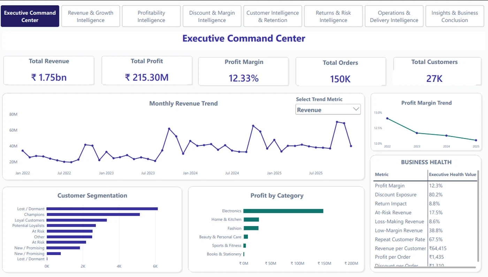
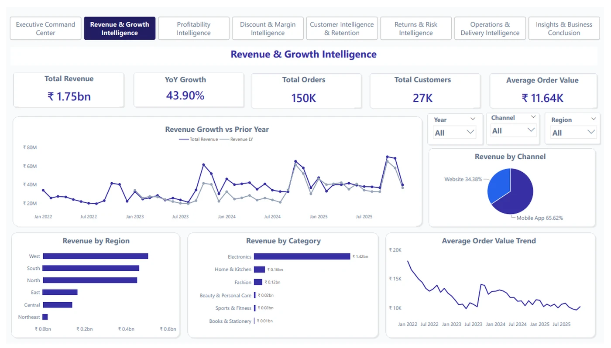
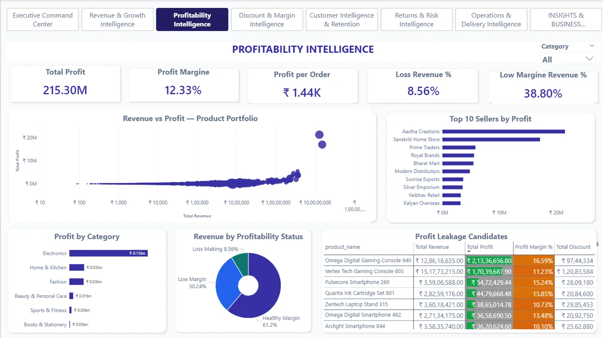
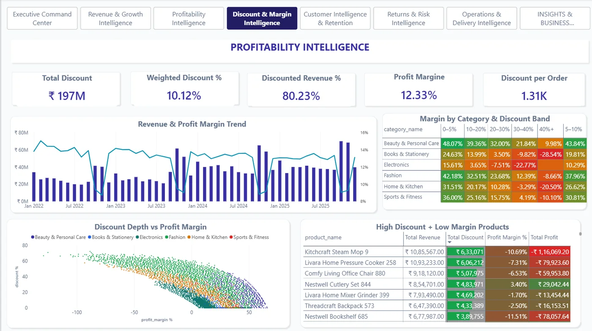
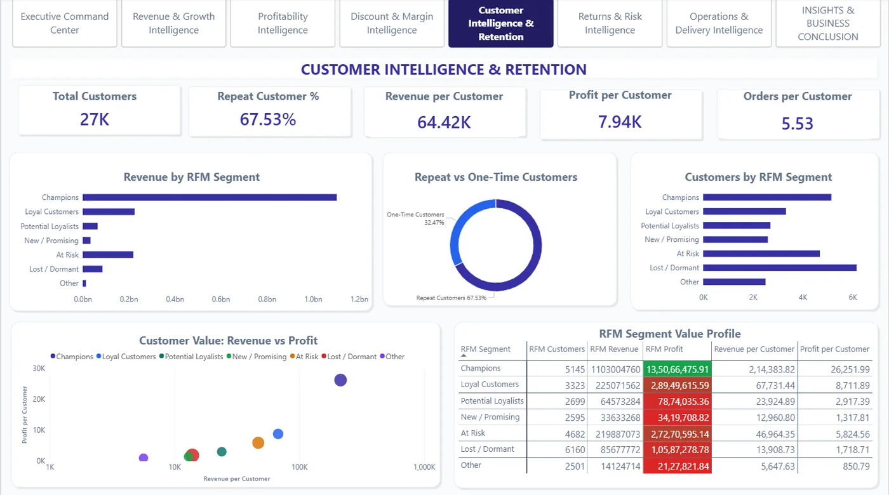
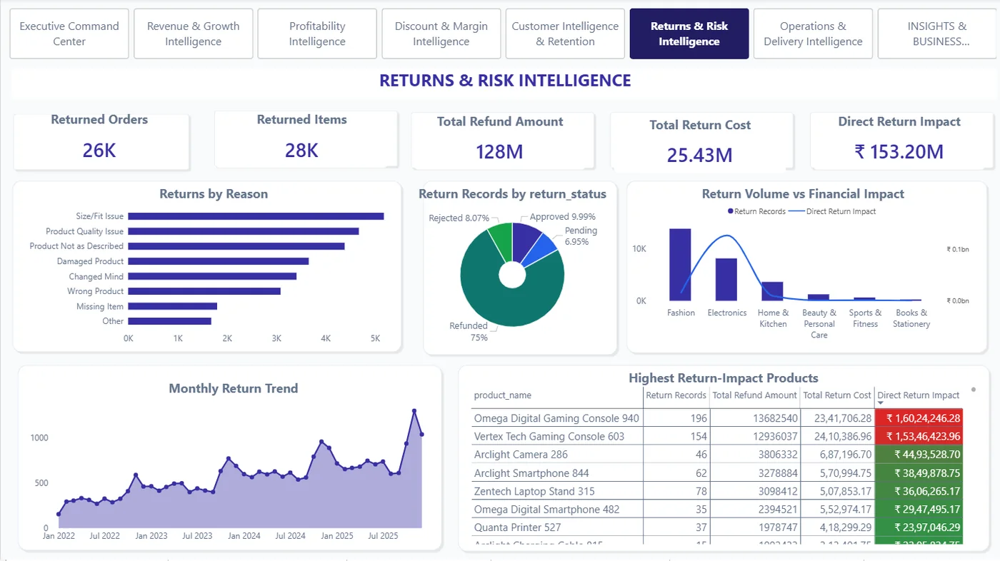
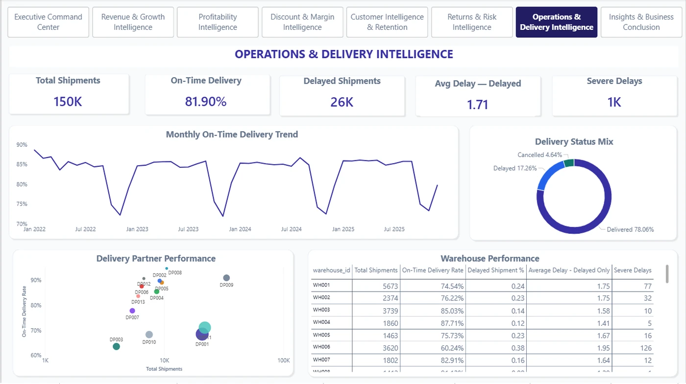
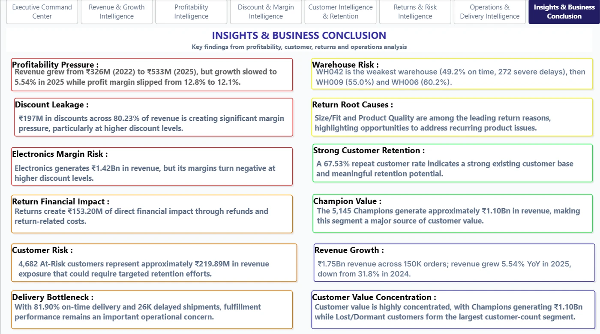

Executive summary
ShopKart India is a synthetic B2C marketplace connecting customers with third-party sellers. I analysed a 12-table relational dataset in PostgreSQL and Python, then built an 8-page Power BI report, to find out why profit wasn't growing as fast as sales.
Revenue is ₹1.75bn and profit ₹215.30M (a 12.33% margin) — but the trend is the story. Revenue growth slowed from +31.8% in 2024 to +5.5% in 2025, while the margin slid from 12.81% (2022) to 12.10% (2025) as the average discount rose from 9.5% to 10.6% and average order value fell from ₹14.2K to ₹10.3K. Electronics is 81.6% of revenue at a thin 10.4% margin, and that margin falls from 16.9% with no discount to 3.6% at 11–20% off and below zero beyond 20%.
Business problem
Business question: why isn't profitability improving despite strong sales growth — and how much of the revenue is actually sustainable?
Questions investigated
- Which products, categories and sellers earn weak margins?
- Where do discounts help sales, and where do they destroy margin?
- Who creates value, and who is drifting toward churn?
…and the leaks
- How much value is lost to returns and refunds?
- Where are fulfilment and delivery bottlenecks?
- Is growth outpacing revenue quality?
Dataset
12 relational tables covering customers, sellers, products, categories, orders, order items, payments, shipments, returns, warehouses, delivery partners and locations, spanning 2022–2025: 150,000 orders, 324,306 order items and 50,000 registered customers, of whom 27,105 placed at least one order.
Dataset note: ShopKart is a synthetic marketplace generated for portfolio analysis — the figures demonstrate analytical methodology, not a real company's performance.
Data preparation
Before any analysis, the data was validated rather than assumed clean: row counts, duplicate keys, missing values, key uniqueness, foreign-key integrity, and recalculated revenue, cost, profit and discount figures to confirm they matched their component fields.
Odd values were not deleted automatically — negative item-level profit was kept because it can be a genuine business finding (a loss-making SKU), not a data error.
How revenue is counted: reported revenue (₹1.75bn) and profit (₹215.30M) cover every order item, including cancelled orders (₹81.5M of revenue) and orders that were later returned (₹333.6M). Refunds and return costs are shown separately as “return impact”. Delivered orders alone give ₹1.33bn revenue and ₹163.9M profit (a 12.32% margin).
Data model & SQL architecture
SQL — PostgreSQL
- 26 analysis scripts in 7 topic folders
- Profitability, discount effectiveness, retention & RFM, cohorts, returns, delivery, integrated diagnosis
- Schema, views and a long data-validation script
Power BI — model
- Fact tables: FactSales, FactReturns, shipments
- Eight dimensions including date, customer, product, seller, warehouse and RFM segment
- A dedicated measures table for DAX
RFM segmentation
- Customers scored 1–5 on recency, frequency and monetary value
- Segments: Champions, Loyal, Potential Loyalists, New / Promising, At Risk, Lost / Dormant
- Thresholds are analytical choices, not universal rules
SELECT
CASE
WHEN discount_percent = 0 THEN '0% — No Discount'
WHEN discount_percent <= 10 THEN '1–10%'
WHEN discount_percent <= 20 THEN '11–20%'
WHEN discount_percent <= 30 THEN '21–30%'
WHEN discount_percent <= 40 THEN '31–40%'
ELSE '40%+'
END AS discount_band,
COUNT(DISTINCT order_id) AS total_orders,
SUM(quantity) AS units_sold,
ROUND(SUM(item_revenue), 2) AS revenue,
ROUND(SUM(discount_amount), 2) AS total_discount,
ROUND(SUM(item_profit), 2) AS profit,
ROUND(SUM(item_profit) / NULLIF(SUM(item_revenue), 0) * 100, 2) AS profit_margin_percent
FROM vw_order_item_analysis
GROUP BY 1
ORDER BY MIN(discount_percent);The full query in the repository also returns an effective discount rate; it is trimmed here for readability.
Analytical approach
- 12-table PostgreSQL schema
- Data validation
- SQL analysis (26 scripts)
- Python EDA & stats
- Power BI model + DAX
- 8-page dashboard
- Written insights
Key findings
| Year | Revenue | Orders | Avg order value | Avg discount | Profit margin | Revenue growth |
|---|---|---|---|---|---|---|
| 2022 | ₹325.8M | 22,921 | ₹14.2K | 9.5% | 12.81% | — |
| 2023 | ₹382.9M | 32,346 | ₹11.8K | 10.2% | 12.34% | +17.5% |
| 2024 | ₹504.7M | 43,133 | ₹11.7K | 9.9% | 12.25% | +31.8% |
| 2025 | ₹532.6M | 51,600 | ₹10.3K | 10.6% | 12.10% | +5.5% |
Python statistical check
In the notebook I tested the discount–margin relationship across 3,998 products with Spearman correlations and a Mann–Whitney U test.
| Relationship | Spearman ρ | Reading |
|---|---|---|
| Discount vs profit margin | +0.35 | Higher-discount products have higher margins |
| Discount vs return rate | +0.23 | Weak positive |
| Return rate vs profit margin | −0.12 | Weak negative |
| Units sold vs profit | +0.75 | Strong |
| Revenue vs profit | +0.87 | Strong |
All five relationships have p < 0.01 (n = 3,998 products). Products above the median discount (16.78%) have a median margin of 21.2% versus 13.3% at or below it (Mann–Whitney U, p ≈ 10⁻⁶³).
Business recommendations
Protect margin
- Cap Electronics discounts at 10%. The 11–20% band is ₹366M of revenue earning 3.6% instead of 12.0%; at the 1–10% margin, profit would be about ₹30.5M higher (+14%) — an upper bound that assumes no lost volume.
- Stop Electronics discounts above 20%: ₹37.1M of revenue earned a combined loss of ₹2.9M.
- Report average order value next to order growth — it has fallen from ₹14.2K to ₹10.3K since 2022.
Retain and operate
- Win back the 4,682 at-risk customers (₹219.89M of past revenue) and activate the 22,895 registered customers who never ordered.
- Start with the two largest return reasons, Size/Fit and Product Quality, at product level.
- Fix fulfilment at WH042, WH009 and WH006 first — about 17% of all late shipments.
Dashboard showcase
An eight-page report, each page built around one business question. Click a screenshot to enlarge.








Technical implementation
| Tool | Used for |
|---|---|
| PostgreSQL + pgAdmin | Relational modelling, validation and analytical SQL |
| Python (Pandas, NumPy, SciPy, Matplotlib) | Exploratory and statistical analysis |
| Power Query, Power BI, DAX | Data preparation, model and dashboard |
Limitations & assumptions
Worth keeping in mind
- The dataset is synthetic and does not represent real company data.
- Reported revenue and profit include cancelled and later-returned orders; refunds are reported separately (see Data preparation). Growth figures here are calendar-year totals.
- “Low-margin revenue” (38.8%) means items with a margin under 10% and includes the loss-making 8.56%. “Repeat customers” (67.53%) is measured among customers who ordered, not all registered customers. “On time” counts a shipment as late only if it was delayed, with all 150,000 shipments in the denominator.
- The discount-band margins are associations, not causal effects, and the ₹30.5M upside assumes volumes would hold.
- RFM thresholds are heuristic, and “direct return impact” is refunds plus return costs without resale or salvage value.
Explore the code
The repository separates SQL, Python and Power BI work so each can be reviewed independently.